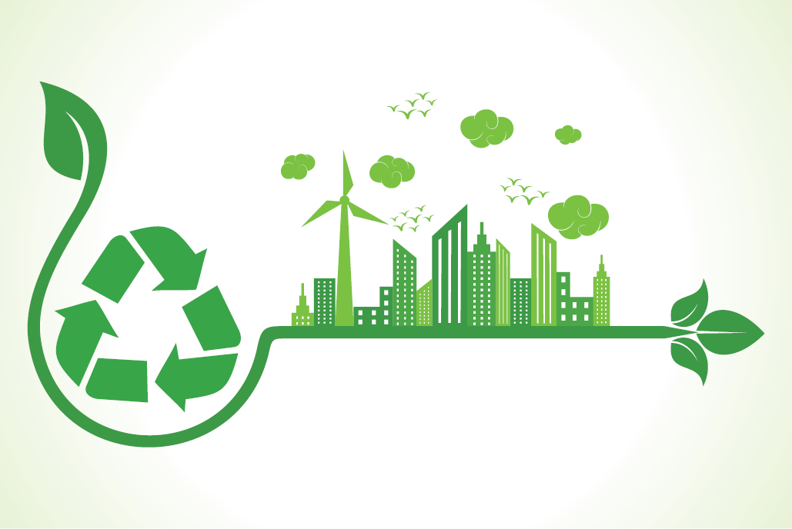

Environmental issue...

Environment destruction caused by humans is a global problem, and this is a problem that is on going every day. By year 2050, the global human population is expected to grow by 2 billion people, thereby reaching a level of 9.6 billion people (Living Blue Planet 24).[4] The human effects on Earth can be seen in many different ways. A main one is the temperature rise, and according to the report �Our Changing Climate�, the global warming that has been going on for the past 50 years is primarily due to human activities (Walsh, et al. 20). Since 1895, the U.S. average temperature has increased from 1.3 �F to 1.9 �F, with most of the increase taken place since around year 1970 (Walsh, et al. 20)
Types...
Major current environmental issues may include climate change, pollution, environmental degradation, and resource depletion etc. The conservation movement lobbies for protection of endangered species and protection of any ecologically valuable natural areas, genetically modified foods and global warming.
Scientific grounding...
The level of understanding of Earth has increased markebly in recent times through science especially with the application of the scientific method. Environmental science is now a multi-disciplinary academic study taught and researched at many universities. This is used as a basis for addressing environmental issues.
Large amounts of data have been gathered and these are collated into reports, of which a common type is the State of the Environment publications. A recent major report was the Millennium Ecosystem Assessment, with input from 1200 scientists and released in 2005, which showed the high level of impact that humans are having on ecosystem services.
Organizations...
Environmental issues are addressed at a regional, national or international level by government organizations.
The largest international agency, set up in 1972, is the United Nations Environment Programme. The International Union for Conservation of Nature brings together 83 states, 108 government agencies, 766 Non-governmental organizations and 81 international organizations and about 10,000 experts and scientists from countries around the world.[7] International non-governmental organizations include Greenpeace, Friends of the Earth and World Wide Fund for Nature. Governments enact environmental policy and enforce environmental law and this is done to differing degrees around the world.
Solutions...
Sustainability is the key to prevent or reduce the effect of environmental issues. There is now clear scientific evidence that humanity is living unsustainably, and that an unprecedented collective effort is needed to return human use of natural resources to within sustainable limits.[9][10] For humans to live sustainably, the Earth's natural resources must be used at a rate at which they can be replenished (and by limiting global warming)
Concerns for the environment have prompted the formation of green parties, political parties that seek to address environmental issues. Initially these were formed in Australia, New Zealand and Germany but are now present in many other countries.
*sustainability*

Sustainability is the process of maintaining change in a balanced fashion, in which the exploitation of resources, the direction of investments, the orientation of technological development and institutional change are all in harmony and enhance both current and future potential to meet human needs and aspirations.[1] For many in the field, sustainability is defined through the following interconnected domains or pillars: environment, economic and social.[2] Sub-domains of sustainable development have been considered also: cultural, technological and political.[3] While sustainable development may be the organizing principle for sustainability for some, for others, the two terms are paradoxical (i.e. development is inherently unsustainable).[4][5] Sustainable development is the development that meets the needs of the present without compromising the ability of future generations to meet their own needs.[1] Brundtland Report for the World Commission on Environment and Development (1987) introduced the term of sustainable development.
Sustainability can also be defined as a socio-ecological process characterized by the pursuit of a common ideal.[6] An ideal is by definition unattainable in a given time and space. However, by persistently and dynamically approaching it, the process results in a sustainable system.